RF Frontend Board
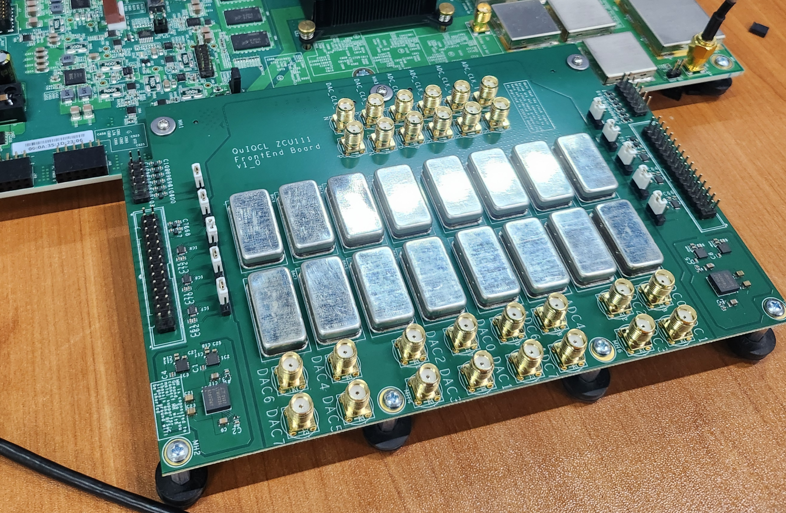Overview
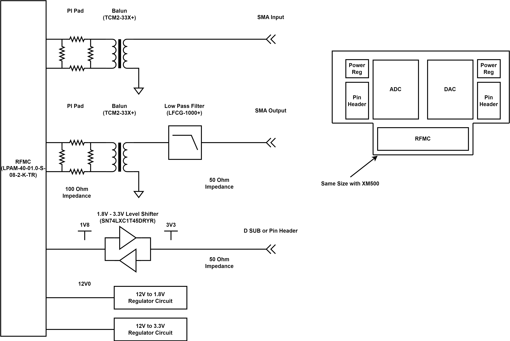Daughter board which transmit RF signal to optical modulator which drive quantum gate for trapped ion. Typical frequency region is 200MHz, and to transform from differential RF signals to single ended, balun is placed.
Board Configuration
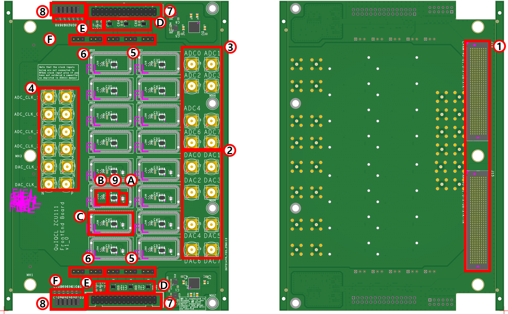 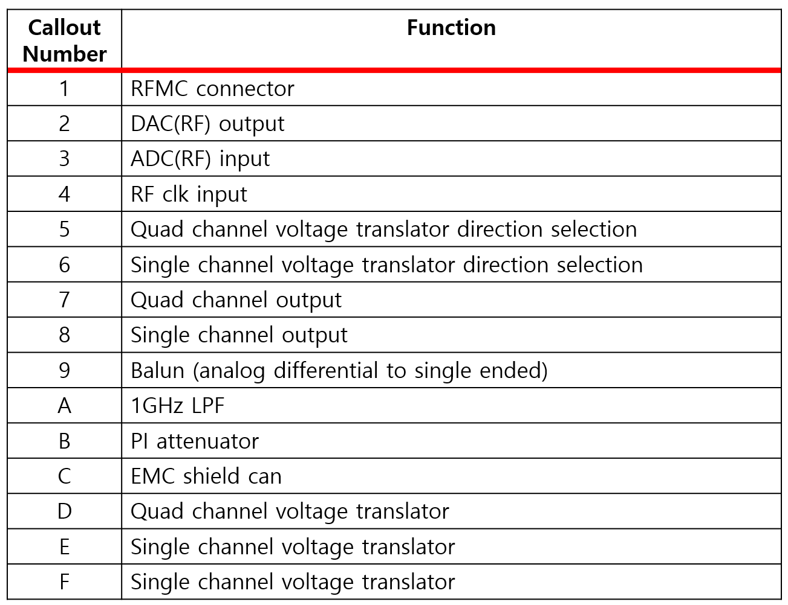Design Consideration
PI pad
PI pad is placed in front of balun to suppress reflection. It does not affect impedance of circuit, but only attenuate RF signal.
Balun
The balun converts the differential RF signal to a single-ended signal. Because its passband starts above DC, only the AC component is transmitted through the balun.
Stitching via/trace shielding
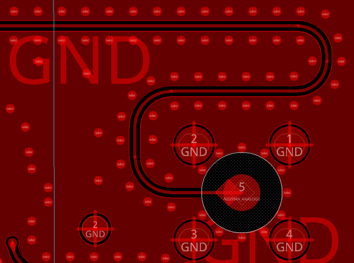Stitching vias help shield the signal trace from external noise. A common guideline is to space stitching vias no more than one-tenth of the wavelength at the highest target frequency; placing them even closer poses no problem and can further enhance shielding.
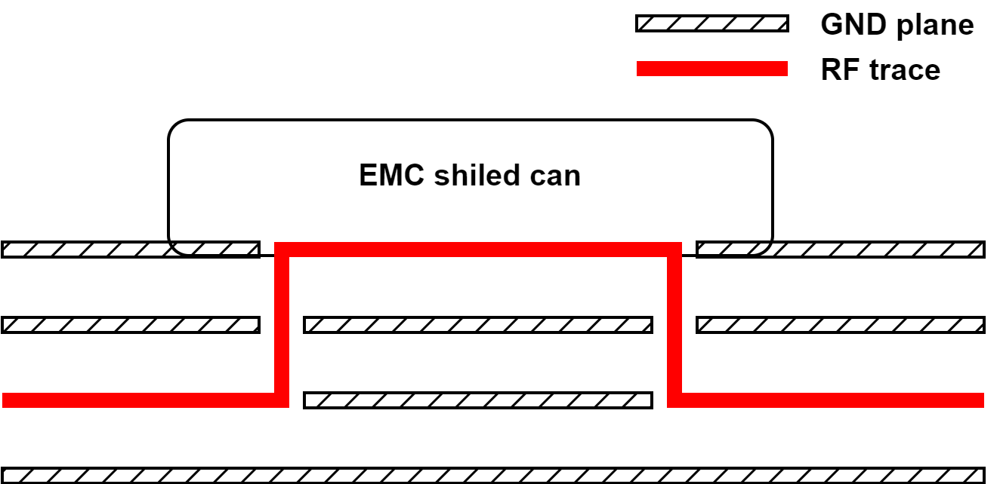The RF trace is normally routed as a strip-line between two ground planes for noise immunity. Where the trace must surface to the top or bottom layer—to reach a component such as a balun or filter—it is enclosed under an EMC shield which is mounted on the top layer, maintaining isolation at that transition.
Phase match
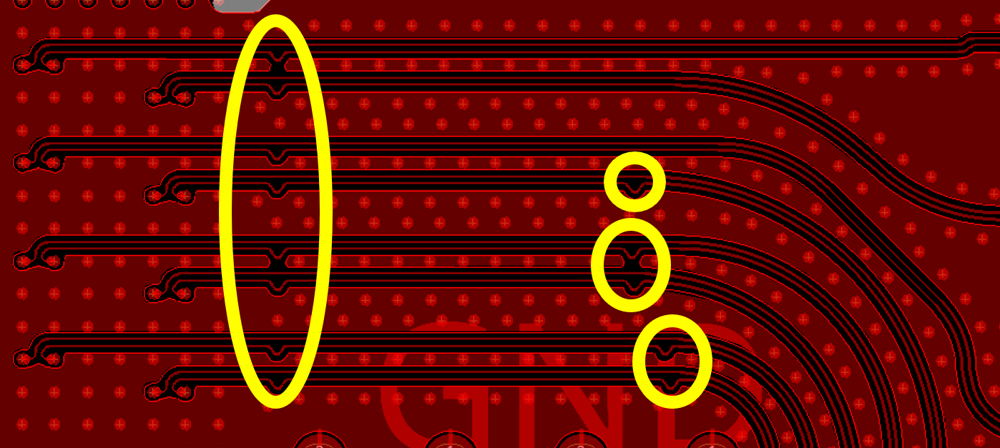When a differential pair turns a corner, the outer trace travels a slightly longer path than the inner trace. This skew introduces phase mismatch, converting some of the differential signal to common-mode noise. The imbalance can be mitigated by enforcing phase (length) matching at every bend—typically by inserting small rounded “bulges,” i.e., length-compensation bumps, in the shorter inner trace—so that both conductors remain electrically equal in length.
Length match
Signal length should be matched to guarantee the same signal latency.
Component hole
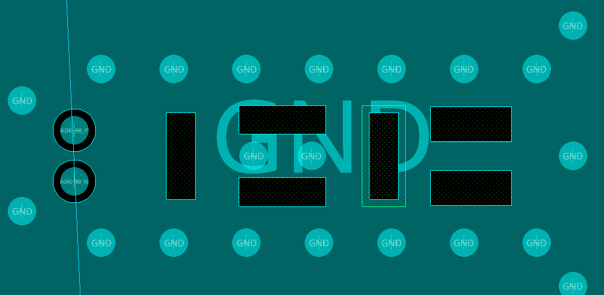A typical SMT component pad presents a large copper area, which significantly increases parasitic inductance. This unwanted inductance can be mitigated by back-drilling a hole beneath the top or bottom plane where component is soldered.
Impedance at connector
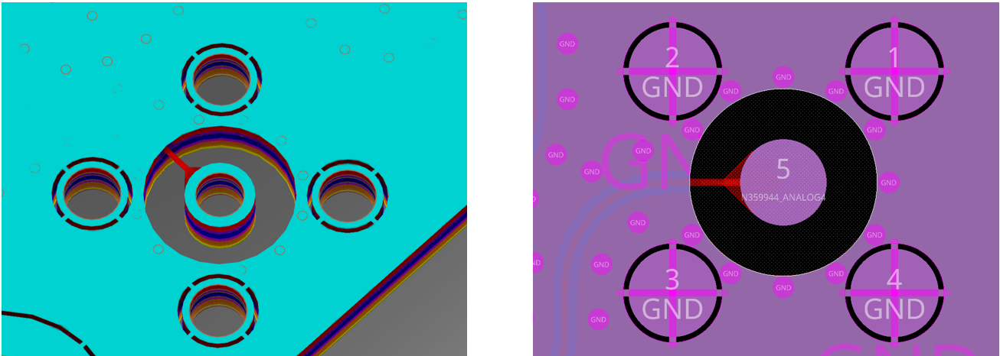A solder-less SMA connector offers the best impedance continuity because the signal path avoids any solder-induced discontinuity. However, it is expensive and its advantage is negligible outside the millimetre-wave band, so a plated through-hole (PTH) SMA is employed instead. As the signal transitions from the PCB trace to the PTH connector, it encounters an impedance mismatch. This mismatch is mitigated by drilling an oversized anti-pad (a “coax-sized” clearance) around the centre pin, ensuring that the transition maintains the target impedance and thereby minimises return loss (S11).
Analog/digital ground isolation
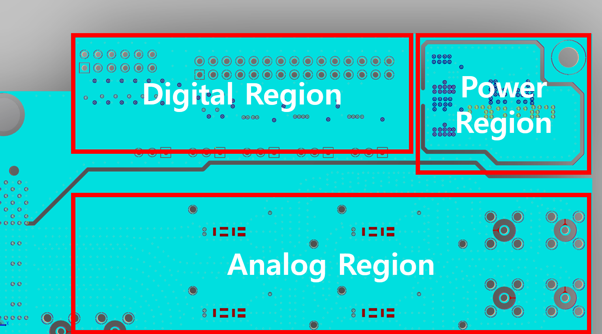Routing digital and analog traces in separate PCB regions usually provides adequate ground isolation. To further reduce coupling, the ground planes are physically split, and the switching regulator is placed on an isolated “island” so that its switching noise remains confined.
Test Results
SI Wave Simulation
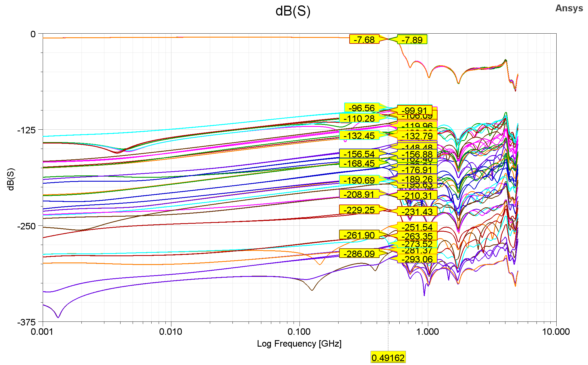To verify schematic and layout, simulation is conducted through ANSYS SIwave. As shown in above figure, cross talk is suppressed under -96dB, and S parameter follows our expectation.
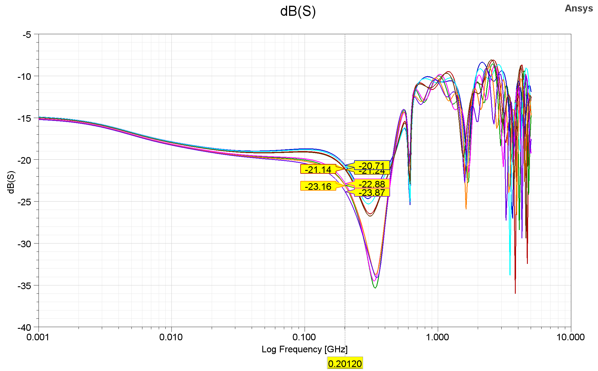Reflection is suppressed under -20dB at our target frequency.
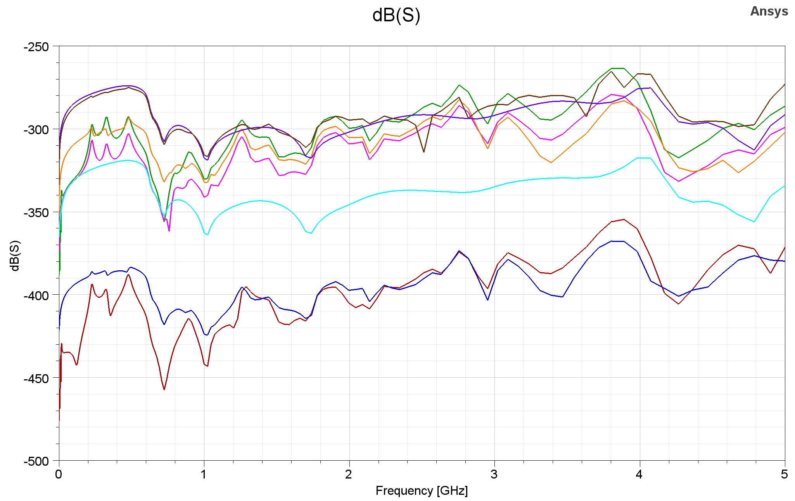Crosstalk between the most closest digital trace and RF trace is simulated and shows that it is suppressed under -250dB.
HFSS Simulation
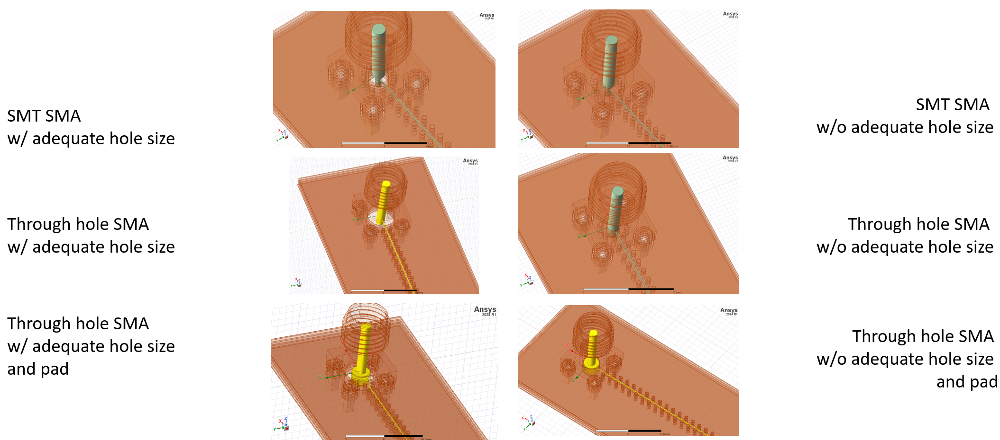To clarify coplanar waveguide(CPW) to SMA connector transition, HFSS simulation is conducted. 6 different models are simulated, where the SMT connector, through hole connector without pad, and through hole connector with pad with, or without adequate size of throughole are compared.

The simulation results show that through hole size critically affects the S parameter, and SMT, through hole case does not show big difference at our target frequency.
EMC Consideration
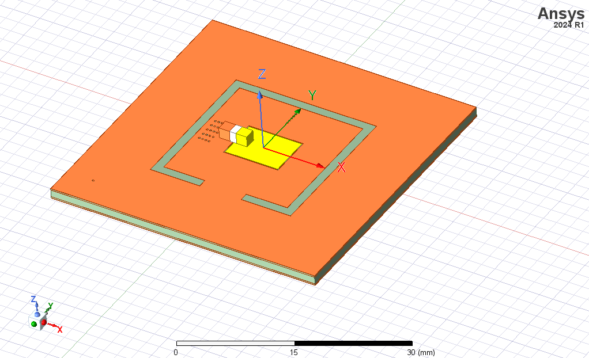To isolate switching noise from power supply, power circuit is implemented on the islanded region. To verify the isolation, HFSS simulation is conducted.
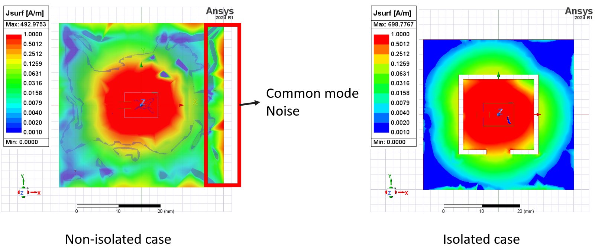Simulation results show that island structure is effective to isolate the noise. In addition to switching noise suppression, to suppress unwanted EMI to RF signal, RF signals are shielded with ground plane. When the RF signals need to be connected to exposed components, shield can is placed to protect the RF signal.